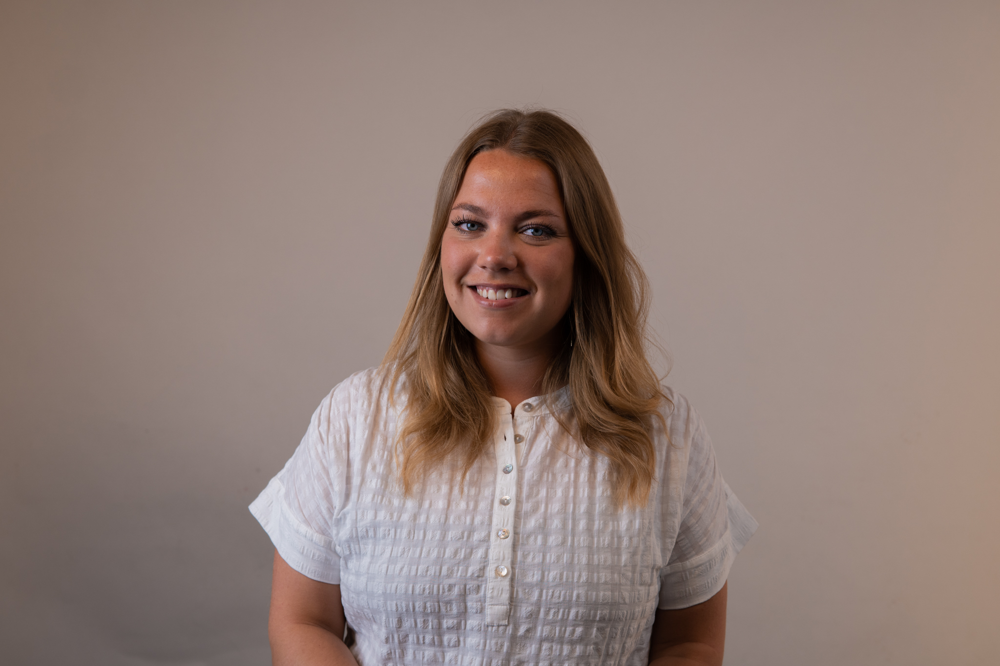
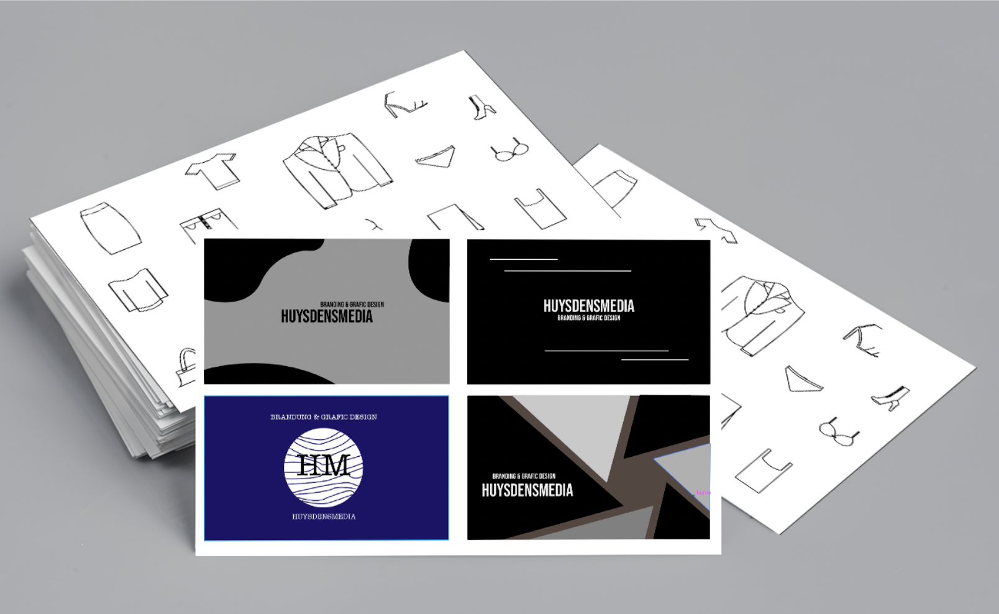
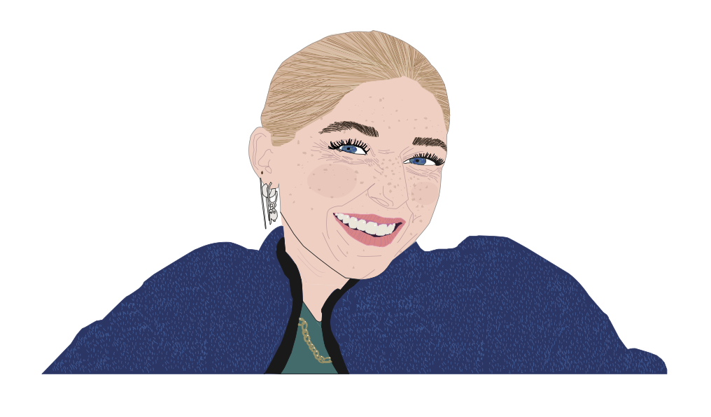
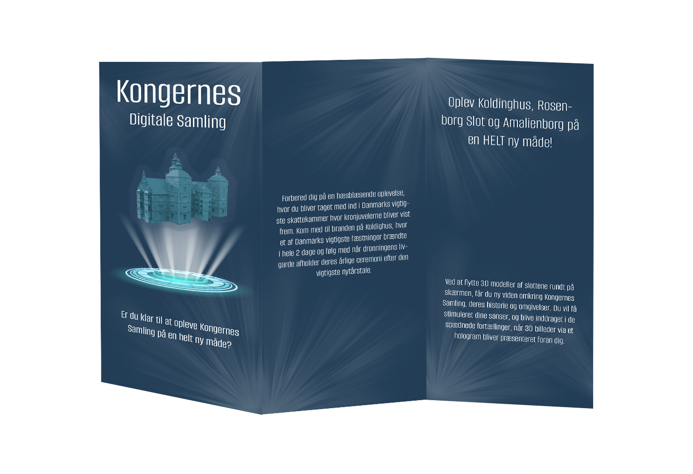
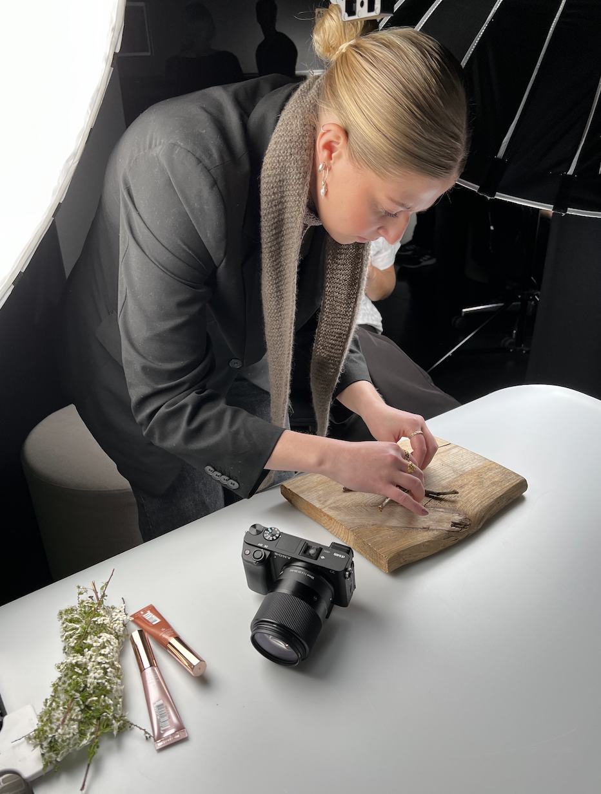
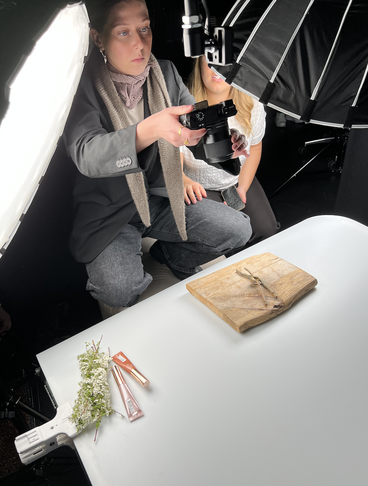

PORTFOLIO - UX & UI DESIGNER
Som UX og UI designer stræber jeg efter at styrke budskaber og indhold. Visionen bag huysdensmedia er derfor, at skabe opsigtsvækkende og professionelle designløsninger der matcher din virksomhed. Et sammenhængende og indbydende grafisk udtryk fastholder dine besøgende og skiller dig ud fra mængden.
Hvad kan jeg hjælpe dig med?
PROJEKTER
Som multimediedesigner har man mulighed for at tage en masse forskellige hatte på. Man evner altså mere en blot én kompetance.
Nedenstående er blot et udpluk af, hvad jeg kan hjælpe dig med

PRODUKT BILLEDER
Ved hjælp af Adobe Lightroom Classic og Premiere Pro, kan jeg skabe billeder og videoer til den stemning og udtryk du ønsker til dit indhold.

PORTRÆT BILLEDER
Mangler du et professionelt billede til dine platformer eller ønsker du, at skabe en stemning til dit design ved at vise udtryk? Så er portræt måske noget for dig. Jeg tager billeder med korrekt lys og position, og redigere det I Adobe Lightroom Classic.

REDESIGN
I Adobe XD kan jeg skabe moodboards, styletyles, wireframes, mockups og prototyper. Det kan blandt andet bruges til et re-design af din hjemmeside, hvis du ønsker at få opdateret, optimeret eller moderniseret din hjemmeside eller app.

LOGOER
Ved hjælp af Adobe Illustrator kreere jeg logoer, tegninger, elementer, visitkort, animationer og meget mere, til lige det du står og mangler til dine reklamer, markedsføring, hjemmeside mm.

SELVPORTRÆT
Ved hjælp af Adobe Illustrator skaber jeg minder og foreviger ejestykker. Se for eksempel selvportrættet her, hvor et selvportræt er blevet forevieget i programmet, ved brug af kun ét værktøj.

FOLDER
I Adobe Indesign kan jeg kreere akademiske rapporter, plakater, foldere, visitkort og meget mere. Få omtale ved at have en flot plakat med dit koncept hængende, kom ud med dit budskab med en folder eller noget helt tredje - det er op til dig.
OM SKABEREN BAG HUYSDENSMEDIA
Mit navn er Sofie Huysdens Poulsen, og jeg er skaberen bag huysdensmedia. Jeg er 25 år og har en passion for kreativ udfoldelse. Til hverdag beskæftiger jeg mig med dette, gennem min igangværende uddannelse på UCL som multimediedesigner. Her bruger jeg Adobe programmer til at skabe alt fra plakater, foldere og logoer til animationer samt foto- og videoredigering. Derudover har jeg stiftet bekendtskab med HTML og CSS samt Wordpress, som begge bruges til at opsætte flotte og indbydende hjemmesider. Dog ligger min interesse og passion ved det grafiske design, content creation og web design. Ønsker du at få styrket dit indhold eller skabt noget nyt og innovativt, er du mere end velkommen til at kontakte mig.


KONTAKT
Send mig en besked og lad mig vide, hvad jeg kan hjælpe dig med!